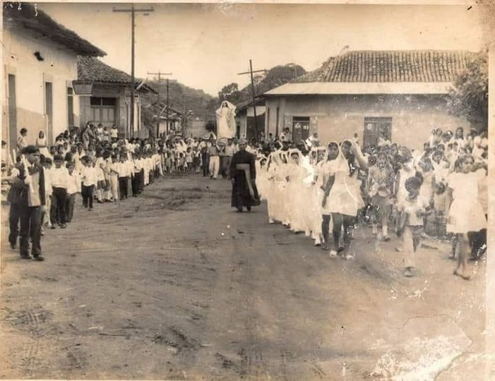

El municipio de Diriomo, ubicado en el departamento de Granada, Nicaragua, tiene una rica historia que se remonta a la época precolombina. Fue poblado por las tribus Caribies o Quiribies, que fueron llamadas posteriormente Chontales o Chorotegas. La palabra Chorotega en idioma náhuatl significa "extranjeros".
De estas tribus proviene Diriangén, que fue el cacique de la región de La Manquesa que comprendía Diriamba, Diriomo, Diriá, Niquinohomo y Catarina. El término y voz Diriá o Dirías no corresponde al nombre racial de la tribu, sino al de la región de su asiento, pues significa precisamente "Pobladores o vecinos de las colinas o alturas".
Durante la época colonial, Diriomo fue encomendado a Pedro Jiménez, vecino de la ciudad de Granada, hacia el año 1518. Más tarde pasó a ser encomienda de Ramón de Cárdenas. No se conoce ninguna ley de creación municipal del pueblo de Diriomo, debido sin duda alguna a la antigüedad de su población.
Es importante mencionar que el nombre “Diriomo” es una expresión lingüística de origen chorotega y significa “Valle de dirianes”. Su nombre se debe a que en este territorio se asentaron los dirianes, que era una agrupación étnica perteneciente a los chorotegas. Este pueblo inmigrante originario de México llegó a Nicaragua en el siglo IX de nuestra era, dando origen a varios grupos con diferentes nombres.
Diriomo, al igual que otros municipios antiguos, presenta características de tiempos coloniales. Algunas manifestaciones las encontramos en la construcción de viviendas que todavía conservan esa peculiaridad de antigüedad. La construcción de estas es con material que se encuentra en el lugar, se le conoce como adobe; es una mezcla de barro con sácate. Este material fue usado en un 100% de las primeras casas al igual que la Iglesia Católica se construyeron en este municipio aproximadamente hace 200 años.
Historia de diriomo
